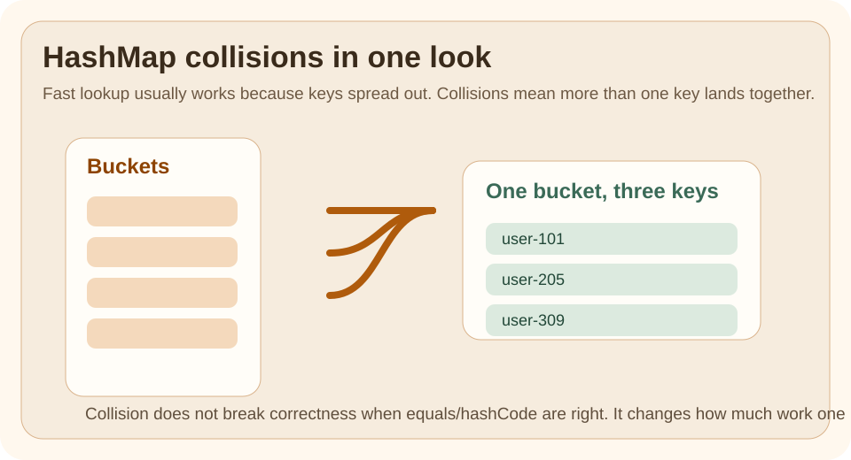

The Problem
HashMap feels instant until two questions arrive:
- what happens when keys collide
- why do
equals()andhashCode()matter so much
This topic exists because many developers can use HashMap, but fewer can explain why it is fast on average and where the risks come from.
Quick Visual

Read the picture in one pass:
- keys are spread into buckets
- collisions mean more than one key lands in the same bucket
- correct
equals()andhashCode()keep lookup correct
Run This Code
Run the example and notice that collisions do not break correctness by themselves.
The real lesson is:
- bad hashing increases work
- bad
equals()orhashCode()breaks map behavior
Expected Output
- the stored status is found correctly
- several keys share the same bucket
- correctness still holds because the key contract is correct
❌ Bad Code
Treat HashMap as magical constant-time lookup with no caveats.
That usually leads to:
- ignoring key design
- weak reasoning about collisions
- confusion when behavior is correct but slower than expected
✅ Better Code
Think in two layers:
- average lookup is fast because keys are spread out
- collisions and poor key design increase the amount of work inside a bucket
Comparison Snapshot
| Need | HashMap |
TreeMap |
|---|---|---|
| Fast average lookup by key | strong fit | usually slower |
| Sorted keys | no | yes |
| Simple key-value storage | strong fit | fine, but adds ordering cost |
| Understand collision behavior | required | not the same design issue |
Performance Lens
The right mental model is:
- lookup is usually near constant average time
- collision-heavy buckets can do more work
- key design affects speed and correctness
When performance matters, the useful measurements are:
- lookup time with realistic keys
- map size growth
- collision rate under real data shape
- memory cost per entry
Watch Out
The biggest beginner bug is not collision.
It is inconsistent key contracts.
If equals() and hashCode() disagree, lookup can become wrong even when the code compiles and the map looks populated.
Use This When
- you need key-based lookup
- ordering is not the main requirement
- average fast access matters
Avoid This When
- you need sorted traversal by key
- the real problem is uniqueness only, not key-to-value lookup
After Reading This, You Should Know
HashMapspeed depends on good key distribution, not magic- collisions increase work but do not automatically break correctness
- correct
equals()andhashCode()are part of the data-structure contract
Next Topic
Go back and compare this with ArrayList growth and lookup. Together they explain two of the most important everyday Java performance tradeoffs.